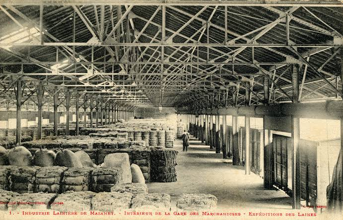

Lainage de la
Montagne Noire


⟹ Artisanat & Savoir-faire ⟸
Blottie au pied de la Montagne Noire, Mazamet appartient à un vieux pays de montagne où l'élevage ovin, la laine, le bois et la force des cours d'eau ont longtemps structuré l'économie. Bien avant la révolution industrielle, les habitants d'Hautpoul puis de Mazamet travaillent les fibres animales : la laine est lavée, cardée, filée, tissée et foulée dans de petits ateliers. L'Arnette et ses affluents offrent à la fois une eau abondante et une énergie hydraulique précieuse pour les moulins, foulons et premières installations textiles.
Au début du XIXe siècle, Mazamet est encore un centre textile méridional de taille modeste, en relation avec Castres et les autres villes drapières du Languedoc. Les fabricants dépendent alors des laines de tonte du Languedoc, de Provence et d'Espagne. Cette matière première devient insuffisante au moment où les ateliers cherchent à accroître leur production : la difficulté d'approvisionnement va paradoxalement provoquer l'une des plus étonnantes reconversions industrielles françaises.

Le tournant décisif intervient en 1851. L'industriel Pierre-Élie Houlès fait venir d'Argentine des peaux de moutons encore couvertes de leur toison afin d'en récupérer la laine. D'autres essais avaient été tentés peu auparavant dans le Midi, notamment à Nîmes, Montpellier et Bédarieux, mais c'est à Mazamet que l'opération débouche sur une véritable industrie. Après plusieurs mises au point apparaît le délainage à l'échauffe : une fermentation contrôlée de la peau permet de relâcher naturellement l'implantation du poil et de retirer la toison sans détruire le cuir.
Le milieu naturel joue un rôle essentiel dans cette réussite. Les eaux de l'Arnette sont réputées très douces et pauvres en calcaire, qualité particulièrement favorable au procédé biologique de l'échauffe et au lavage de la laine. Les vallées encaissées de la Montagne Noire fournissent aussi l'énergie hydraulique nécessaire aux ateliers. Ainsi, une innovation commerciale venue de l'autre côté de l'Atlantique rencontre à Mazamet un environnement technique et géographique exceptionnellement favorable.
Très vite, les industriels comprennent que leur avenir dépend d'un approvisionnement direct. En 1856, Hippolyte Mas part à Buenos Aires pour la maison d'Augustin Périé et y établit un comptoir d'achat. D'autres négociants suivent. Les Mazamétains constituent progressivement un réseau international de courtiers, acheteurs et correspondants dans les grands pays d'élevage. Les peaux lainées arrivent d'Argentine et d'Uruguay, puis d'Australie, de Nouvelle-Zélande, d'Afrique du Sud et d'autres régions pastorales. Mazamet, petite ville enclavée au pied de la Montagne Noire, se trouve ainsi directement reliée aux grands marchés mondiaux de la laine et du cuir.
L'arrivée du chemin de fer en 1866 facilite cette ouverture. Les balles débarquées dans les ports peuvent gagner plus rapidement les usines mazamétaines, tandis que laine et peaux traitées repartent vers les centres de transformation. Une succursale de la Banque de France est installée en 1868, signe de l'importance croissante des opérations commerciales et financières liées à cette industrie. Dans les années 1870 puis surtout 1880-1890, le délainage supplante progressivement l'ancienne fabrication textile locale.
Le principe économique est particulièrement efficace : une même peau fournit deux produits commercialisables. La laine, dite autrefois « laine morte » parce qu'elle provient d'un animal abattu, est triée, lavée et vendue aux filatures ; le cuir débarrassé de sa toison, ou cuirot, alimente la mégisserie. Autour du délainage se développe donc tout un système industriel associant lavage, triage, séchage, stockage, négoce, mégisserie, transports et activités bancaires.
Cette spécialisation transforme profondément le paysage. Les vallées de l'Arnette et du Thoré se couvrent d'usines, de magasins et de séchoirs. Une main-d'œuvre nombreuse accomplit des gestes très spécialisés : réception et classement des peaux, échauffe, pelage, lavage et tri des laines, séchage des cuirots, préparation des peaux pour la mégisserie. Les odeurs de suint et de peaux, les ballots de laine et l'activité des entrepôts deviennent pendant des générations des éléments familiers de la vie mazamétaine.
À son apogée, Mazamet traite une part considérable du commerce international des peaux lainées. En 1929, la ville reçoit plus de 80 % des peaux en laine importées en France. Les études géographiques de l'entre-deux-guerres décrivent une industrie pratiquement sans équivalent, capable de drainer des matières premières venues de plusieurs continents avant de redistribuer laine et cuir vers les marchés français et étrangers. C'est cette puissance commerciale qui vaut à Mazamet le surnom durable de « capitale mondiale du délainage ».
« Le nom de Mazamet est connu dans le monde entier » : l'industrie du délainage fit d'une petite cité de la Montagne Noire un carrefour du commerce international de la laine et du cuir.
— d'après les études géographiques consacrées aux industries de Mazamet, années 1930L'essor n'est pas seulement économique. Il façonne une véritable société industrielle : familles de négociants ouvertes sur l'Amérique du Sud et les dominions britanniques, ouvriers des usines de vallée, employés du commerce, transporteurs et artisans vivent directement ou indirectement du délainage. Cette prospérité laisse son empreinte dans l'urbanisme, les demeures patronales, les bâtiments industriels et la culture locale. L'histoire sociale est également marquée par les questions ouvrières et syndicales qui accompagnent l'industrialisation de la fin du XIXe et du XXe siècle.
Cette effervescence sociale connaît un temps fort retentissant au début de 1909 : de janvier à mai, une grève dure oppose le syndicat patronal du délainage au syndicat ouvrier autour d'une question de salaires. Remarquablement organisée — réunions fréquentes, soupes communistes, départ temporaire de certains enfants d'ouvriers vers des familles d'accueil — et soutenue par la CGT, dont plusieurs militants nationaux séjournent longuement sur place, la grève se solde après plusieurs mois de tension par la victoire des ouvriers. Le contrecoup se fait sentir jusque dans le Tarn voisin : privée de matière première pendant l'arrêt du délainage, la mégisserie de Graulhet connaît à son tour, en décembre de la même année, une grève de près de cinq mois déclenchée par ses ouvrières.
Mazamet a longtemps cultivé le récit d'une ville épargnée par la lutte des classes, où les ouvriers, catholiques, votaient traditionnellement à droite tandis que les patrons, souvent protestants, votaient à gauche. Cette image d'un ordre social harmonieux, popularisée notamment lors du « centenaire du délainage » célébré en 1951, a depuis été nuancée par les historiens, qui montrent combien elle masquait des tensions syndicales bien réelles. La Maison des Mémoires de Mazamet, installée dans l'ancienne demeure patronale des Fuzier, conserve aujourd'hui le souvenir de cette période à travers ses salons du XIXe siècle et ses expositions consacrées à l'histoire locale.
Après la Seconde Guerre mondiale, l'activité demeure importante mais doit affronter de profondes mutations : concurrence internationale, évolution du marché de la laine, développement des fibres synthétiques, déplacement des industries de transformation et nouvelles conditions du commerce mondial. À partir des années 1970 et surtout dans les années 1980, le système mazamétain entre dans une phase de déclin rapide. De nombreuses entreprises ferment et les vallées industrielles perdent progressivement l'activité qui les avait animées pendant plus d'un siècle.
Le délainage n'a pourtant pas disparu de la mémoire collective. Friches, cheminées, anciens ateliers, maisons de négociants et paysages industriels constituent aujourd'hui les traces matérielles d'une aventure singulière. Le patrimoine local rappelle comment une ville de la Montagne Noire, grâce à son eau, à ses entrepreneurs, à ses ouvriers et à des réseaux commerciaux couvrant plusieurs continents, a occupé pendant plus d'un siècle une place exceptionnelle dans l'économie mondiale de la laine et du cuir.